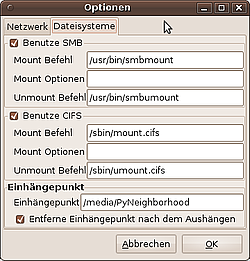

Samba Client PyNeighborhood
Archivierte Anleitung
Dieser Artikel wurde archiviert, da er - oder Teile daraus - nur noch unter einer älteren Ubuntu-Version nutzbar ist. Diese Anleitung wird vom Wiki-Team weder auf Richtigkeit überprüft noch anderweitig gepflegt. Zusätzlich wurde der Artikel für weitere Änderungen gesperrt.
Anmerkung: Das Projekt wird scheinbar nicht mehr weiter geführt. Die letzte veröffentliche Version 0.5.4 datiert auf 2011.
Zum Verständnis dieses Artikels sind folgende Seiten hilfreich:
pyNeighborhood  ist ein in Python geschriebenes Samba-Clientprogramm, mit dessen Hilfe man Freigaben suchen, anzeigen und einbinden kann - ähnlich der Netzwerkumgebung unter Windows. Besonders nützlich ist das Programm für Desktop-Umgebungen, deren Dateimanager keine Freigaben im Netzwerk anzeigen oder verbinden konnten (z.B. Xfce oder LXDE). Das Programm ist als Weiterentwicklung des inzwischen veralteten Programms LinNeighborhood entstanden.
ist ein in Python geschriebenes Samba-Clientprogramm, mit dessen Hilfe man Freigaben suchen, anzeigen und einbinden kann - ähnlich der Netzwerkumgebung unter Windows. Besonders nützlich ist das Programm für Desktop-Umgebungen, deren Dateimanager keine Freigaben im Netzwerk anzeigen oder verbinden konnten (z.B. Xfce oder LXDE). Das Programm ist als Weiterentwicklung des inzwischen veralteten Programms LinNeighborhood entstanden.
Im Gegensatz zum graphischen Tool Gigolo baut PyNeighborhood nicht auf dem gvfs, sondern auf dem cifs-vfs auf, wodurch mehr Einbind-Optionen zur Verfügung stehen [7].
Installation¶
Folgende Pakete müssen installiert [1] werden:
pyneighborhood (universe)
 mit apturl
mit apturl
Paketliste zum Kopieren:
sudo apt-get install pyneighborhood
sudo aptitude install pyneighborhood
Nach erfolgreicher Installation kann das Programm aus dem Startmenü über
"Internet -> pyNeighborhood" (GNOME)
"K-Menü -> Programme -> System -> pyNeighborhood" (KDE)
"Netzwerk -> pyNeighborhood" (Xfce)
oder mit dem Befehl pyNeighborhood gestartet [2] werden.
Konfiguration¶
Durch  -klicken der Schaltfläche "Einstellungen" im Hauptfenster öffnet sich ein Optionsfenster mit zwei Reitern. Hier können alle wesentlichen Einstellungen vorgenommen werden. Normalerweise können alle Standard-Einstellungen bis auf den Einhängepunkt und Benutzername/Passwort beibehalten werden.
-klicken der Schaltfläche "Einstellungen" im Hauptfenster öffnet sich ein Optionsfenster mit zwei Reitern. Hier können alle wesentlichen Einstellungen vorgenommen werden. Normalerweise können alle Standard-Einstellungen bis auf den Einhängepunkt und Benutzername/Passwort beibehalten werden.
Netzwerk¶
In diesem Reiter werden verschiedene Parameter festgelegt, um im Netzwerk nach Freigaben zu suchen.
Unter "Standard Benutzername und Passwort" kann man, falls man für alle Freigaben dieselben Zugangsdaten benutzen möchte, den gewünschten Benutzernamen sowie das zugehörige Passwort eingeben. Es wird automatisch bei jeder neuen Freigabe übertragen (es ist jedoch auch möglich, für neue Freigaben eigene Zugangsdaten einzugeben).
In "Lookup" werden die Pfade der Programme eingetragen, die im Hintergrund nach Freigaben suchen und diese anzeigen. Normalerweise muss hier nichts geändert werden.
Falls man nach dem Einhängen von Freigaben den Ordner automatisch öffnen will, setzt man einen Haken bei "Starte einen Dateimanager nach dem Einhängen". Unter GNOME wäre der einzutragende Dateimanager Nautilus, unter Xfce Thunar und unter LXDE PCManFM.
Normalerweise benötigt PyNeighborhood keine Root-Rechte. Zum Einhängen von Freigaben können jedoch Root-Rechte erforderlich sein. Wenn "sudo verwenden" aktiviert ist, fragt PyNeighborhood automatisch mittels sudo nach Root-Rechten. Auch diese Einstellung braucht man im Normalfall nicht zu ändern.

Dateisysteme¶
In diesem Reiter werden verschiedene Parameter festgelegt, um im Netzwerk gefundene Freigaben einzuhängen.
Die beiden Einstellungen "SMB" und "CIFS" sollten nicht geändert werden. Intern wird ab Ubuntu 8.04 Hardy Heron nur noch CIFS verwendet, SMB wird in einer der kommenden Versionen komplett aus pyNeighborhood entfernt werden.
Wichtig ist in diesem Teil des Optionsfensters nur die Eingabe des "Einhängepunkts". Freigaben werden an den Ort eingehängt, der hier eingetragen ist. Im Idealfall ist dies ein extra für diese Zweck angelegter Unterordner des Home-Verzeichnisses, da PyNeighborhood Schreibrechte für diesen Ordner braucht. Grundsätzlich können auch andere Ordner wie /media oder /mnt genutzt werden [4] [5].
Benutzung¶
Bei korrekter Konfiguration ist die Bedienung sehr simpel. In der linken Spalte werden die verfügbaren Netzwerke bzw. Arbeitsgruppen angezeigt, während in der rechten Spalte die eingehängten Freigaben angezeigt werden. Ein -Klick auf den blauen Pfeil aktualisiert die entsprechende Liste.
Einhängen einer Freigabe¶
Zum Einhängen einer sichtbaren Freigabe markiert man die gewünschte Freigabe und -klickt auf das graue "Verbindungs"-Symbol oberhalb der Baumansicht. Falls erforderlich, wird ein Benutzername und das Passwort abgefragt. Der eingehängte Ordner erscheint danach rechts in der Liste der Einhängepunkte.
Möchte man eine Freigabe einhängen, die nicht in der linken Spalte angezeigt wird, so klickt man oben auf das grüne "Hinzufügen"-Kreuz. Dort muss man in das erscheinende Eingabefeld den Ort der Freigabe eingeben.
Aushängen einer Freigabe¶
Zum Entfernen eines zuvor eingehängten Ordners markiert man in der rechten Spalte diesen und klickt dann auf das graue "Verbindung trennen"-Symbol.
Hinweis:
Ab Ubuntu 8.04 erscheint zusätzlich ein Symbol für die Freigabe auf dem Desktop. Wen das stört, kann dieses Verhalten mit dem Gnome-Konfigurations-Editor ("Anwendungen -> Systemwerkzeuge" oder über das Terminal mit gconf-editor) und dem Entfernen des Hakens bei "volumes_visible" unter "/apps/nautilus/desktop" beseitigen.
Achtung: dies betrifft dann aber alle Desktop-Symbole für (externe) Datenträger, z.B. auch für USB-Sticks.
Probleme und Lösungen¶
Fehlermeldung beim Herunterfahren¶
Folgende Fehlermeldung kann beim Herunterfahren auftreten: „CIFS VFS: server not responding. No response for cmd 50 ...“. Das liegt daran, dass CIFS-Freigaben erst nach dem Beenden des Netzwerks ausgehängt werden. Einfache Lösung: Freigaben vor dem Herunterfahren manuell aushängen (siehe auch CIFS - Probleme und Lösungen).
Unterschiedliche Samba-Versionen¶
Ist auf dem Client eine andere Version von Samba installiert als auf dem Server, sind Probleme mit den CIFS-UNIX-Erweiterungen möglich. Dann hilft CIFS-UNIX-Erweiterungen deaktivieren weiter.
Links¶
pyNeighborhood - Ikhaya-Projektvorstellung, 08/2010
Samba Client cifs - Freigaben einbinden mit cifs-vfs
Gigolo - vergleichbares Werkzeug, das jedoch das gvfs verwendet
Samba
 Ubersichtsseite
Ubersichtsseite
- Erstellt mit Inyoka
-
 2004 – 2017 ubuntuusers.de • Einige Rechte vorbehalten
2004 – 2017 ubuntuusers.de • Einige Rechte vorbehalten
Lizenz • Kontakt • Datenschutz • Impressum • Serverstatus -
Serverhousing gespendet von